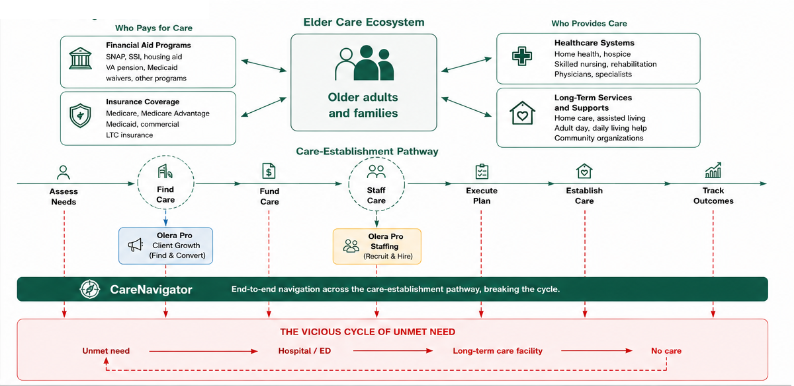
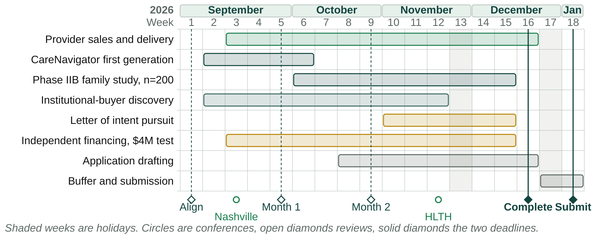

September 2026–January 2027
The objective before the January 2027 CRP submission is to retire the major weaknesses exposed by our August/September drafting and mock-review process. We have a strong understanding of the problem, a compelling innovation, and a clear vision for modeling the care-establishment pathway and creating solutions for the steps along that pathway.
The next 18 weeks should therefore retire risk and produce evidence before submission: demonstrate that we can commercialize products within the eldercare ecosystem; complete and validate a substantially mature first-generation CareNavigator; use institutional-buyer discovery to refine the CRP research strategy and evidence requirements; and establish an investable post-CRP path.
Olera operates within the eldercare ecosystem around a care-establishment pathway that moves an older adult or family from an identified need to established care and measurable outcomes. Failure at any step can return the family to unmet need and the downstream vicious cycle. CareNavigator is the end-to-end product intended to make that full pathway navigable, executable, measurable, and progressively more reliable.
Before CareNavigator reaches full commercial maturity, Olera can commercialize narrower provider products at specific high-value pathway steps. Client Growth addresses the Find Care step by helping providers acquire and convert appropriate clients; Caregiver Staffing addresses the Staff Care step by helping providers recruit and place workers. These products improve the same pathway, create near-term revenue without charging families, demonstrate that the team can commercialize with ecosystem stakeholders, and deepen the provider records, relationships, workflows, and operating knowledge that CareNavigator will ultimately use.

Figure 1. Olera's strategic model: the eldercare ecosystem, care-establishment pathway, provider-product beachheads, CareNavigator, and the vicious cycle of unmet need.
The CRP is one component of a broader R&D and commercialization program. The near-term work should leave Olera entering CRP with a mature first-generation product, commercial execution evidence, and buyer-informed late-stage R&D objectives.
| Stage / Timeframe | Primary work | Outcome | Handoff |
|---|---|---|---|
| Phase I & II 2021–2024 COMPLETE | Problem definition; national data; assessment/navigation foundation; provider ecosystem pilots. | Foundation, data assets, early providers, and core innovation established. | Completed. |
| Phase IIB / Pre-CRP 2024–2026 WE ARE HERE | First-generation CareNavigator; ~n=200 family usability/V&V study; provider commercialization along the pathway; institutional-buyer discovery. | Mature first-generation product + feasibility evidence + commercial execution + buyer-informed CRP plan. | Ready for CRP Day 1 with a mature product and defensible evidence requirements. |
| CRP / Late-Stage R&D 2027–2030 | Second-generation development; design and quality-systems improvement; buyer-informed rigorous real-world validation. | Defensible evidence that closes remaining technical and commercialization risks for CareNavigator. | Evidence package supporting post-CRP institutional proof of concept. |
| Post-CRP / Scale 2030+ | Paid institutional proof of concept; scale contracts; expand provider products and platform. | Demonstrated utilization/economic value, revenue scale, and durable infrastructure. | Scale with non-SBIR capital. |
Table 1. The R&D and commercialization program. What each stage does, what it produces, and what it hands to the stage after it.
The remainder of Phase IIB should focus on three parallel objectives. Together they retire the commercial-execution, technical, and commercial-thesis risks that weakened the first CRP draft.
A. Provider commercialization: retire commercial-execution risk. Use company resources to commercialize narrow products at identified pathway steps, beginning with non-medical home care agencies. The goal is not to make these provider products the CRP-funded technology. It is to prove that Olera can sell, deliver, retain, and generate revenue with stakeholders in the same ecosystem in which CareNavigator operates.
| Product | Working offer / target | What it teaches or builds | Commercial evidence |
|---|---|---|---|
| Olera Pro Client Growth | Working hypothesis: ~$100–$150/month; target ~25 agencies. Managed ads, provider pages, lead qualification/conversion, reviews, and SEO. | Provider acquisition and conversion workflows; richer provider records; demand and referral knowledge. | Paying accounts, repeat purchasing/retention, revenue, delivery cost. |
| Olera Pro Staffing | $250 per successful hire; target ~25 agencies averaging ~3 hires/month. | Workforce capacity at the Staff Care step; provider staffing demand; student-worker supply and placement workflows. | Paid hires, repeat purchasing, retention, unit economics. |
Table 2. The two provider products. Pricing and targets are working hypotheses until the team locks them, as the paragraph below states.
At the working targets above, the two products could create a meaningful pre-submission revenue run rate. The exact target should be treated as a planning hypothesis until the team locks pricing and the beachhead. The strategic value is broader than the revenue itself: the work retires team execution risk and strengthens the network, records, and operating knowledge required for CareNavigator.
B. CareNavigator first-generation development: retire technical risk. Phase IIB should deliver the first end-to-end CareNavigator before CRP Day 1. The system should assess needs, identify care and funding options, construct a plan, execute bounded administrative workflows through permission-gated agents, verify whether care is established, track outcomes, and persist the pathway data needed for learning.
The planned ~n=200 Phase IIB family study should be used primarily to establish usability, feasibility, workflow performance, safety/verification, and whether the first-generation system functions as specified across real navigation episodes. This should retire the basic technical question of whether the product exists and works well enough to justify late-stage development, rather than asking CRP to fund creation of the first functional product.
| Pre-CRP period | CareNavigator work | Required output |
|---|---|---|
| September | Lock first-generation requirements; map end-to-end pathway states; define execution-agent boundaries, data capture, verification, and safety controls. | Frozen first-generation requirements and V&V plan. |
| October | Complete core end-to-end engineering and execution workflows; instrument state transitions, actions, exceptions, and outcomes. | Study-ready first-generation system. |
| November | Run/continue ~n=200 family usability and V&V study; resolve critical failures; document workflow performance. | Usability, feasibility, safety, and workflow evidence. |
| December | Freeze evidence; document specifications and remaining technical risks; translate findings into CRP second-generation design and quality-system work. | Mature first-generation product and CRP-ready technical evidence package. |
Table 3. The pre-CRP CareNavigator plan, month by month, and the output each month has to produce.
C. Institutional-buyer discovery: retire commercial-thesis risk. Buyer discovery should test rather than assume the institutional CareNavigator thesis. We need to determine whether Medicare Advantage plans, ACOs, and other risk-bearing organizations view failed care establishment as a sufficiently important and addressable driver of utilization; how they solve the problem today; what alternatives already exist; what economic value successful care establishment could create; what they would pay for; and what evidence would be required before a paid proof of concept.
| Question | What we need to learn before CRP | Desired output |
|---|---|---|
| Problem and value | Does improving care establishment matter enough to buyers? What utilization/cost mechanisms matter? | Validated or rejected value proposition. |
| Competition | How is this solved today? Where are existing vendors or internal programs strong or weak? | Clear differentiation and whitespace. |
| Economics | What population, contract structure, price logic, and savings threshold would matter? | Initial commercial and POC economics. |
| Evidence | What endpoints, comparison design, data, sample, follow-up, and decision thresholds would support a post-CRP POC? | Buyer-informed CRP evidence requirements and POC specification. |
Table 4. What institutional-buyer discovery has to resolve before the CRP, and the output that resolves each question.
Private investors would be investing in Olera's full R&D and commercialization program over the next several years for a potentially much longer-term upside. The thesis is that Olera can become infrastructure for the care-establishment pathway within a growing eldercare ecosystem: building the data, provider relationships, workflows, execution tools, and navigation layer that help families move from need to established care while reducing costly downstream failure.
Near-term provider products matter because they can generate revenue now, prove commercial execution, and deepen the network while CareNavigator matures. CareNavigator creates the larger potential upside if better care establishment can be shown to reduce avoidable utilization and create economic value for risk-bearing buyers. Over time, a sufficiently instrumented pathway could also become a platform into which new care-delivery technologies, including automation, AI, and robotics, can be incorporated as the underlying care ecosystem evolves.
The pre-CRP investor objective is therefore not simply to obtain supportive letters. It is to make the thesis diligence-ready: demonstrate execution, show a functioning first-generation CareNavigator, validate institutional demand and evidence requirements, and present a credible financing path from CRP through proof of concept and scale.
This is the January scorecard. Targets are planning goals, not facts; the final application should only make claims supported by evidence actually achieved.
| Risk | Why it matters | Target | Stretch | What we could say in the CRP if achieved |
|---|---|---|---|---|
| Commercial execution | Reviewers need evidence that the team can sell and deliver. | Paying customers, repeat purchasing, documented revenue and unit economics. | Broader provider base and stronger recurring revenue. | Olera can sell, deliver, and retain paying customers. |
| Provider network | CareNavigator depends on responsive, accurate provider infrastructure. | Active providers with current records and measurable engagement. | Larger, deeper, geographically concentrated network. | Olera has activated a responsive provider network that navigation can rely on. |
| CareNavigator product | The CRP should begin with a late-stage product, not a prototype. | First-generation end-to-end system; execution agents; safety controls; tracking. | Full first-generation feature set with V&V complete. | The first-generation CareNavigator exists and is validated for late-stage development. |
| Phase IIB evidence | The only pre-CRP chance to observe the endpoint the CRP is built on. | ~n=200 study complete or nearly so, with usability and feasibility evidence and a count of episodes reaching verified established care. | Care-establishment rate and time to establishment, across enough episodes to report. | Phase IIB gives direct feasibility evidence and a first observed measure of care establishment. |
| Institutional buyers | Interviews are market research. Only a written commitment is market pull, and the third Statement of Need question turns on it. | One written, milestone-conditional letter from a risk-bearing organization naming population, endpoint, POC size, and budget, with convergent interviews behind it. | A first paid CareNavigator engagement of any size. Failing that, a second letter, or one that names a price. | A risk-bearing buyer has stated in writing what it would take to purchase. |
| Independent financing | The Fundraising criterion asks for independent third-party funds at or above the NIH request, about $4 million. Engagement alone does not meet that test. | Documented interest at or above $4 million in a form the NOFO accepts: a letter of commitment, a letter of intent, or evidence of negotiations. | A term sheet or signed commitment contingent on CRP milestones. | Independent investors have engaged in writing against the full post-CRP requirement, conditional on CRP milestones. |
Table 5. The January scorecard. What each risk would let the application say if the target is met.
The weekly plan operationalizes the scorecard above. It should remain simple enough to review every week and change when new evidence changes the plan.
| Week | Dates | The week's job | Tasks |
|---|---|---|---|
| 1 | Aug 31–Sep 4 | Decide on direction | • Agree Sections 1 to 6 • Stand up the weekly dashboard • Plan the Nashville meetings |
| 2 | Sep 7–11 | Prepare the offers, the interviews, and the build | • Finalize the Client Growth package • Finalize the Client Growth customer acquisition strategy • Finalize the Caregiver Staffing package • Build the target agency list for Client Growth and Staffing • Set up university pipelines for Staffing • Finish the institutional-buyer interview guide • Prospect MA/ACO conversations • Design the CareNavigator first generation |
| 3 | Sep 14–18 | Start selling provider products | • Launch Client Growth and Staffing sales to the target list • Work Nashville Healthcare Sessions, September 13 to 15, for institutional buyer and investor introductions • Book first MA/ACO conversations • Build CareNavigator Gen 1 • Prepare the investor pitch deck |
| 4 | Sep 21–25 | Lock the pre-CRP product plan | • Lock CareNavigator Gen 1 requirements and the Phase IIB n=200 study plan • Continue sales • Conduct first buyer interviews |
| 5 | Sep 28–Oct 2 | Close first customers | • Close first paying provider(s) • Begin servicing providers • Continue buyer interviews • Finish CareNavigator Gen 1 v1 |
| 6 | Oct 5–9 | Open the financing conversation; start the study | • Complete study-ready CareNavigator workflows • Open investor conversations against the $4 million post-CRP requirement • Continue buyer interviews • Begin the Phase IIB family study |
| 7 | Oct 12–16 | Prove repeat value | • Convert the next provider cohort • Pursue first repeat purchase and retention evidence • Ask each buyer what would have to be true for them to put something in writing |
| 8 | Oct 19–23 | Revise the CRP architecture | • Revise the Research Strategy and Commercialization Plan architecture on the findings from Weeks 1 to 7 • Continue provider sales • Continue the Phase IIB study • Continue investor conversations |
| 9 | Oct 26–30 | Month 2 review; plan HLTH | • Continue provider sales • Continue the Phase IIB study • Continue investor conversations • Continue buyer conversations • Plan HLTH meetings with buyers and investors |
| 10 | Nov 2–6 | Prepare the HLTH ask | • Assemble the evidence pack: traction, product state, study progress • Finalize the letter of intent and the $4 million financing ask so both are ready to hand over • Continue sales and V&V |
| 11 | Nov 9–13 | Draft the application | • Draft the Research Strategy and Commercialization Plan • Continue provider sales • Continue the Phase IIB study • Continue investor conversations • Continue buyer conversations |
| 12 | Nov 16–20 | HLTH | • Continue drafting the Research Strategy and Commercialization Plan • Buyer and investor meetings against the prepared ask • Continue provider sales • Continue the Phase IIB study |
| 13 | Nov 23–27 | Hold the line | • Maintain sales, study execution, and evidence capture through the holiday week • Start nothing else new |
| 14 | Nov 30–Dec 4 | Convert HLTH; prove traction | • Continue drafting the Research Strategy and Commercialization Plan • Move buyers toward a signed letter of intent • Move investors toward documented interest at or above $4 million • Record retention and repeat purchase • Consolidate the Phase IIB study and V&V data • Continue provider sales |
| 15 | Dec 7–11 | Lock the evidence | • Finish the Phase IIB study and lock the numbers • Finalize the buyer-informed CRP design • Close the outstanding letters of intent and financing letters • Continue provider sales |
| 16 | Dec 14–18 | Everything complete | • Complete substantive sections and internal review • Assemble letters and supporting materials • Continue provider sales |
| 17 | Dec 21–25 | Buffer only | • Christmas holiday week • Resolve remaining material gaps • Proof and reconcile the application |
| 18 | Dec 28–Jan 1 | Wrap up and submit | • New Year holiday week • Final compliance check • Final edits and assembly • Submit the CRP application |
Table 6. The eighteen weeks to submission. One job per week, with the tasks under it.

Figure 2. The same eighteen weeks as a schedule, so the overlaps are visible. The two conferences are marked: Nashville in Week 3, before there is much to show, and HLTH in Week 12, four weeks before the internal deadline and the last chance to ask a room for a letter. The J.P. Morgan Healthcare Conference falls in mid-January and is a constraint on the calendar rather than an activity in this plan.
Working note. This is a living planning memo. We will review progress weekly and adjust targets, tasks, and the CRP strategy as evidence emerges.